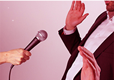
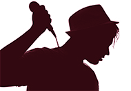

Bienvenue dans l'univer de développement personnel avec notre Académie "Adéglopeh"!
Contenu:
Savoir plus du mot Développent personnel (Diagnostic de soi, vaincre la timidité et gagner sa confiance en soi)
Art de bien parler «Eloquence» (Ne plus avoir peur de parler en public, prise de parole en public: gestuelle, posture, gestion de l’espace)

Choses importantes pour le développement personnel (Être charismatique, avoir des habitudes des gens succès, devenir un homme de valeur ou extraordinaire, être un vrais leader)

Sovir plus à propos de Business (Modele économique, Business Model "CANVAS", Business Plan, trouver un idée pour créer une entreprise, gestion de l’entreprise)

Publicités


Pourquoi Développement personnel?
A nos jours, le développement personnel est l’une des choses la plus recherchée au monde. Si vous ne saviez pas encore que ce que c’est, donc je vous recommande de lire notre page web, parce que je suis totalement sûr qu’il pourrait changer votre vie personnelle. Le Développement personnel est important pour tous ceux qui veulent changer, améliorer leur vie, c’est-à-dire pour rendre plus heureux dans la vie. Brièvement, on peut dire que tous les gens qui ont du succès dans la vie sans doute ont commencé avec le développement personnel, travaillé avec sa soi, enfin devenir Président de la République ou millionnaire, Businessman ou quelqu’un d’autre. A vrai dire, pour être grande personne dans la société ou pour être quelqu’un de différent des autres, c’est n’est pas si facile si on ne travaille pas d’abord avec notre soi, travailler dur avec ses personnalités. Même dans la vie courante, il n’y a rien de possible si on ne commence pas à changer quelque chose de notre soi qui nous embêtent de vivre. Avant d’être heureux, on a beaucoup de choses dont on doit se débarrasser.
Vous savez qu’il a beaucoup de gens qui souffrent dans leur vie personnelle, souffrent avec leurs propres caractères, et disent « Pourquoi je suis comme ça ?». Il y a des gens qui ont des difficultés pour communiquer avec les autres, surtout de parler avec les sexes opposés. Beaucoup de gens souffrent de gérer leur temps, souffrent pour trouver des financements, d’avoir des capitaux pour être heureux, difficultés d’avoir des amis, trouver l’homme de sa vie et notamment des problèmes de vivre dans la société.
Tout ça ne fait rien si on savait depuis longtemps comment leur faire face. La clé, c’est le développement personnel.
Peut-être que vous vous posez des questions «C’est quoi alors le Développement Personnel?».
Le développement personnel (DP) représente un ensemble de méthodes et toutes les activités proposant d’améliorer une connaissance de soi, de valoriser ses talents et potentiels, de recourir à une meilleure qualité de vie, et à la réalisation de ses rêves. Le DP ce n’est pas une psychothérapie. Mais les bases de la psychologie du développement personnel sont d’abandonner toutes les mauvaises ou les idées négatives et de les reformaliser en pensées positives. C’est une ontologie simplificatrice qui est associée au volontarisme.
«Les méthodes de développement personnel se basent sur la transformation de soi pour défaire certains aspects pathologiques (phobie, anxiété, déprime, timidité, peur) et pour améliorer ses performances. (Mieux communiquer, gérer son temps, s’affirmer)». Concrètement, le développement personnel permet d’améliorer sa qualité de vie en changeant son quotidien et en défaisant certaines difficultés pathologies. Les synonymes du DP sont: développement de la personne, connaissance de soi, management de soi, accomplissement de soi, ou encore la recherche du bonheur.
Pourquoi donc prendre la méthode de développement personnel ? Parce que le développement personnel a pour effet de diminuer nos points faibles en renforçant nos points forts, de baisser nos craintes en mettant en valeur notre potentiel, nos compétences, de travailler sur notre motivation en éliminant nos croyances internes limitées. Il permet aussi d’améliorer notre confiance en nous, nos relations avec les autres.
Parmi les objectifs du Développement Personnel:
1) Créer les conditions pour se sentir plus heureux, plus enthousiaste, plus maître de soi et de sa vie.
2) Améliorer sa relation avec soi-même et avec les autres.
3) Valoriser son potentiel personnel pour accroître son impact professionnel.
4) Apprendre à dominer sa peur pour ne pas se sentir nerveux ou stressé.
5) Devenir maître de ses émotions.
6) Améliorer son estime de soi.
7) Découvrir les méthodes qui permettront aux gens d'atteindre plus facilement leurs objectifs.
8) Trouver des solutions, où les autres voient des problèmes.
Origines historiques de Développement personnel
Le développement personnel né aux USA dans une tradition protestante au 18 siècle dans les livres pragmatiques pour réussir dans la vie et dans les affaires qui a été écrit par Benjamin Franklin.
A 1926 Emile Coué, pharmacien et psychothérapeute à Nancy a écrit «Maitre de soi-même par l’autogestion consciente».
A 1936 Dale Carnegie a publié plusieurs manuels de développement personnel qu’il a vendu à 40 millions d’exemplaires.
Après à 1943 la psychologie humaniste est représentée par Abraham Maslow et Carl Roger. Ils développent le concept «self-actualisation», en français auto-actualisation.
Mais ce n'est pas tout!
Pour développer sa soi, on a besoin beaucoup de travail avec son âme. Et ça, croyez-moi, c'est une quelque chose plus difficile que travailler avec notre physique. Parce qu’avec les exercices physiques, si quelqu’un nous dit qu’on aura des courses à pied de 5 km dans les 3 mois prochains, même la personne qui n’a jamais courue dans sa vie pourra être prête dans ces mois-là. Mais avec l’âme, ça va prendre beaucoup de temps de travailler avec elle. Pour ça, il est important de savoir quelques méthodes. Il est recommender aussi d'avoir un "Coach" personnel pour réussir dans peu de temps. Car le coach est une personne spécialisée dans ce genre de chose.
Nous dans cet académie (Adéglopeh) serons revis d'acceillir et de vous aider à amélorer votre personnalité si vous êtes prêt à changer, afin de vous rendrez vivre plus heureux et en harmonie dans cette vie.
Nous sommes toujours "En ligne"